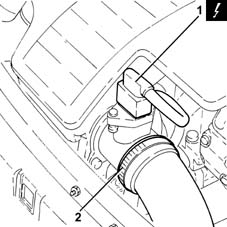
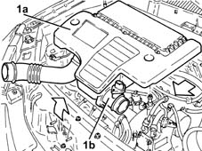
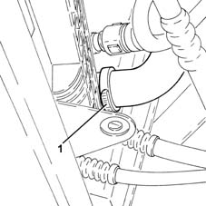
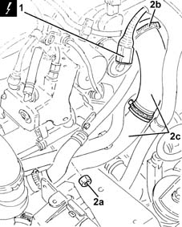
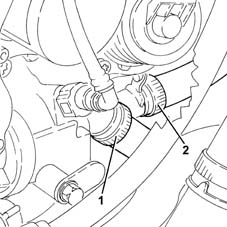
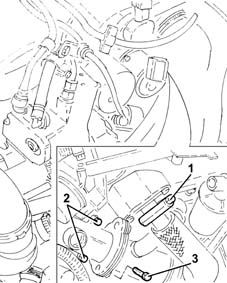
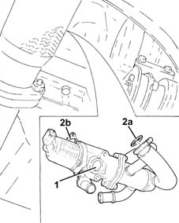
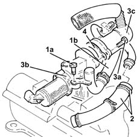
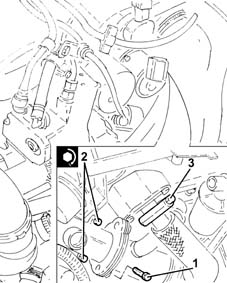

1080C82 E.G.R. - VALVE HEAT EXCHANGER ASSEMBLY - Connector PIPES - R.R.
- Path
- Procedures > 10 ENGINE > 1080 EXHAUST EMISSION CONTROL SYSTEM > 1080C exhaust gas recirculation system (e.g.r.) > 1080C82 E.G.R. - VALVE HEAT EXCHANGER ASSEMBLY - Connector PIPES - R.R.
- Kind
- repair procedure (removal / refitting; the operation number is the code)
- Applies to
- engines: 1.3 JTD; all production periods
- Interactive page
- https://sloeber94.github.io/elrnDB-lYpsln/en/#/2429065
Applies to: engines: 1.3 JTD; all production periods
 Removing
Removing
 Refitting
RefittingPosition the vehicle on the ramp.
Proceed with removal 5530B10 battery - r+r .
Proceed with removal 5530B52 Battery DRIP TRAY/SUPPORT - R.R. .
1. Disconnect the electrical connection from the air flow meter.
 | Name | Connector |
|---|---|---|
1 | Air flow meter |
2. Loosen the band and disconnect the the turbocharger air inlet sleeve from the rigid pipe, air flow meter side.

Applies to: engines: 1.3 JTD; all production periods
1. Remove the air filter (1a) complete with air flow meter (1b) by releasing from the underlying pins and then from the rear fastenings.

Applies to: engines: 1.3 JTD; all production periods
Proceed with removal .
1. Loosen the band and disconnect the lower radiator coolant outlet hose from the radiator, radiator side.

Applies to: engines: 1.3 JTD; all production periods
1. Disconnect the electrical connection from the E.G.R. valve.
| Name | Connector |
|---|---|---|
1 | EGR solenoid |
2. Undo the nut (2a), loosen the band (2b), then disconnect the heat exchanger air supply pipe to the inlet manifold (2c), inlet manifold side, and move it aside.

Applies to: engines: 1.3 JTD; all production periods
1. Loosen the band and disconnect the coolant supply pipe to the water/exhaust gas heat exchanger for the E.G.R. system, thermostat side.
2. Loosen the band and disconnect the coolant supply to from the water/exhaust gas heat exchanger for the E.G.R. system to the climate control system heater, heat exchanger side.

Applies to: engines: 1.3 JTD; all production periods
1. Loosen the collar securing the exhaust gas/water heat exchanger for E.G.R. system, inlet manifold side.
2. Undo the bolts securing the E.G.R. valve/heat exchanger assembly to the cylinder head.
3. Undo the bolt securing the E.G.R. valve/heat exchanger assembly to the engine block.

Applies to: engines: 1.3 JTD; all production periods
1. Working from under the car, remove the E.G.R. valve/heat exchanger assembly and connecting pipes.
2. Remove the gaskets (2a) and (2b).

Applies to: engines: 1.3 JTD; all production periods
Position the E.G.R. valve/heat exchanger assembly and connecting pipes in a vice fitted with protective jaws.
1. Undo the bolt (1a), loosen the band and remove the coolant outlet pipe (1b) from the exhaust gas/water heat exchanger for E.G.R. system.
2. Loosen the band and remove the coolant inlet pipe to the exhaust gas/water heat exchanger for E.G.R. system.
3. Undo the bolts (3a) and detach the E.G.R. solenoid (3b) from the exhaust gas/water heat exchanger for E.G.R. system (3c).
4. Remove the gasket.

Applies to: engines: 1.3 JTD; all production periods
Refitting
RemovingAssemble the E.G.R. solenoid to the exhaust gas/water heat exchanger for E.G.R. system after fitting the gasket and tightening the bolts.
Refit in its seating the coolant inlet pipe to the exhaust gas/water heat exchanger for E.G.R. system and tighten the band.
Refit in its seating the coolant outlet pipe from the exhaust gas/water heat exchanger for E.G.R. system, then secure it with the band and bolt.
Remove the E.G.R. valve/heat exchanger assembly and connecting pipes from the vice.
Working under the vehicle, refit in its seating the E.G.R. valve/heat exchanger assembly and connecting pipes complete with gaskets.
1. Tighten the bolt securing the E.G.R. valve/heat exchanger assembly to the engine block.
2. Tighten the bolts securing the E.G.R. valve/heat exchanger assembly to the cylinder head.
 | Fastening | Component | Ø | Value (daNm) |
|---|---|---|---|---|
2 | Bolt | E.G.R EXHAUST GAS HEAT EXCHANGER. | M8 | (Cylinder head side) 2.0 ÷ 2.4 |
3. Tighten the collar securing the exhaust gas/water heat exchanger for E.G.R. system, inlet manifold side.

Applies to: engines: 1.3 JTD; all production periods
Connect the coolant supply pipe from the exhaust gas/water heat exchanger for E.G.R. system to the climate control system heater, heat exchanger side, and tighten the band.
Connect the engine coolant supply pipe to the EGR system water/exhaust gas heat exchanger, thermostat side and tighten the band.
Connect the air supply pipe from the heat exchanger to the inlet manifold, inlet manifold side, then tighten the band and nut.
Connect the electrical connection to the EGR solenoid.
Connect the lower coolant outlet hose from the radiator, radiator side, and tighten the band.
Replace the air filter, complete with air flow meter, in its housing.
Connect the air intake sleeve to the turbocharger, air flow meter side, and tighten the band.
Connect the electrical connection to the air flow meter.
Proceed with refitting 5530B52 Battery DRIP TRAY/SUPPORT - R.R. .
Proceed with refitting 5530B10 battery - r+r .
Refill the engine cooling system with coolant 0010T20 coolant change .
Proceed with refitting .
Remove the car from the ramps.
Topics linked from this page (5)
- 0010T20 coolant change
- 5530B10 battery - r+r
- 5530B52 Battery DRIP TRAY/SUPPORT - R.R.
- K41 Air flow meter ( ENGINE )
- L30 EGR solenoid